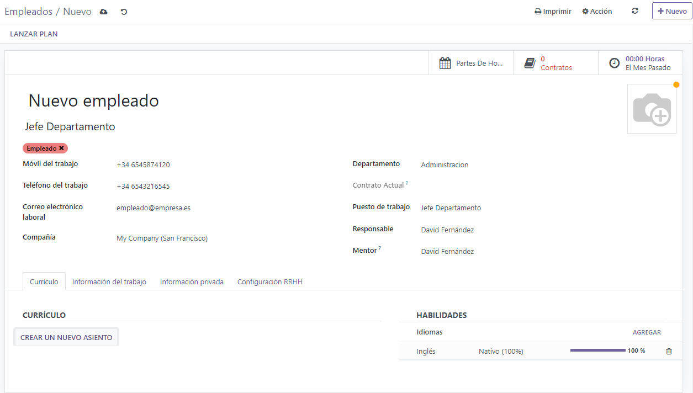
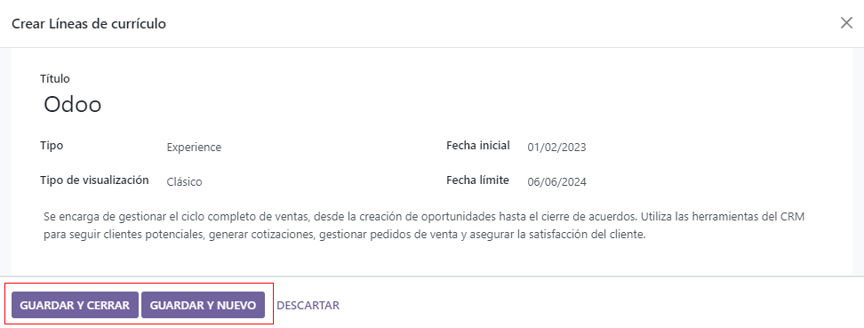
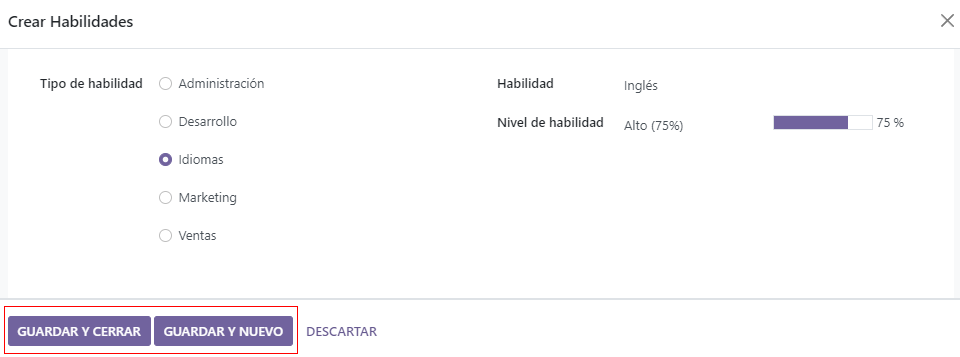

Crear un nuevo empleado¶
Cuando contrata a un nuevo empleado, lo primero que debe hacer es crear un nuevo registro de empleado. Desde el tablero de la aplicación haga clic en el botón Nuevo, aparecerá un nuevo formulario de empleado. Complete la información necesaria y cualquier detalle adicional.
Nota
El número de teléfono y el nombre de la empresa actual se completan en los campos Teléfono laboral y Empresa.
Información general¶
El formulario de empleado se guarda en automático conforme ingresa la información, pero también puede hacer clic en el icono con forma de nube que tiene una flecha hacia arriba en cualquier momento para guardar el formulario de forma manual.
Campos necesarios¶
Nombre: escriba el nombre del empleado.
Empresa: en el menú desplegable, seleccione la empresa que contrató al empleado. También puede crear una nueva empresa si escribe el nombre en el campo.
Campos opcionales¶
Fotografía: haga clic en el icono editar ✏️ (lápiz) ubicado en el cuadro de la parte superior derecha del formulario del empleado para seleccionar la fotografía correspondiente.
Puesto de trabajo: escriba el título del puesto de trabajo del empleado debajo de su nombre o selecciónelo del menú desplegable Puesto de trabajo para que este campo se complete en automático. Puede modificar el campo debajo del nombre del empleado y no es necesario que coincida con la selección que realizó en el menú desplegable.
Etiquetas: haga clic en una etiqueta del menú desplegable para agregar la que corresponda al empleado. Puede crear cualquier etiqueta si la escribe en este campo. Una vez creada, está disponible para todos los registros de empleado y puede agregar tantas como necesite.
Información de contacto del trabajo: escriba el teléfono celular laboral, teléfono laboral, correo electrónico laboral y el nombre de la empresa del empleado.
Departamento: seleccione el departamento del empleado en el menú desplegable.
Puesto de trabajo: seleccione el puesto de trabajo del empleado desde el menú desplegable, después el campo Puesto de trabajo debajo del nombre del empleado se actualizará en automático para reflejar el puesto de trabajo que seleccionó. Estos puestos provienen de la aplicación Reclutamiento y están relacionados con los puestos de trabajo configurados en ese momento.
Gerente: seleccione al gerente del empleado en el menú desplegable.
Instructor: seleccione al instructor del empleado en el menú desplegable.
Fecha de la próxima evaluación: esta fecha se completa en automático con una fecha que se calcula según la configuración en la aplicación Evaluación. La fecha se puede modificar con el selector de calendario.
Nota
Si después de seleccionar un gerente el campo instructor está vacío, entonces este instructor también se asignará como instructor.
Truco
Para editar el departamento, gerente, instructor o empresa que seleccionó, haga clic en la flecha de enlace interno ubicada junto al campo correspondiente. Este botón abrirá el formulario seleccionado y podrá realizar modificaciones. Haga clic en Guardar para aplicar los cambios.
Pestañas de información adicional¶
Pestaña de currículo¶
Currículum¶
Después ingrese la experiencia laboral del empleado en la pestaña Currículum, debe llenar cada línea de manera individual. Al crear una entrada por primera vez, haga clic en Crear una nueva entrada y aparecerá el formulario Crear líneas de currículum. Luego de agregar una entrada, el botón Crear una nueva entrada se reemplaza con el botón Agregar. Proporcione la siguiente información para cada entrada.
Título: escriba el título de la experiencia laboral anterior.
Tipo: desde el menú desplegable seleccione Experiencia, Educación, Proyectos secundarios, Certificación interna, Completó la capacitación interna o escriba una nueva entrada y luego haga clic en Crear «(nueva entrada)».
Tipo de visualización: seleccione clásico, certificación o curso en el menú desplegable.
Fecha de inicio y Fecha de finalización: seleccione las fechas de inicio y fin de la experiencia laboral. Para elegir las fechas, utilice los iconos de flecha < (izquierda) y > (derecha) para desplazarse al mes correspondiente, luego haga clic en el día para terminar su selección.
Descripción: escriba cualquier detalle relevante en este campo.
Una vez que haya escrito toda la información, haga clic en el botón Guardar y cerrar si solo agregará una sola entrada, o haga clic en el botón Guardar y crear nuevo para guardar la entrada actual y crear otra línea del currículum.
Nota
Una vez que guarda el formulario del nuevo empleado, el puesto y la empresa actual se agregan de forma automática a la pestaña Currículum, con la fecha de finalización como actual.
Habilidades¶
En la pestaña Currículum puede agregar las habilidades de un empleado de la misma forma en la que crea una línea del currículum. Al crear una habilidad por primera vez, haga clic en el botón Crear una nueva entrada ubicado en la sección Habilidades y aparecerá el formulario Crear habilidades. Después de agregar una habilidad, el botón Crear una nueva entrada se reemplaza por el botón Agregar. Ingrese la siguiente información para cada habilidad.
Tipo de habilidad: seleccione un tipo de habilidad haciendo clic en el botón de radio ubicado junto al tipo de habilidad.
Habilidad: luego de seleccionar un Tipo de habilidad, las habilidades correspondientes relacionadas con el tipo de habilidad seleccionado aparecen en un menú desplegable. Por ejemplo, al seleccionar Idioma aparecen varias opciones de idiomas para seleccionar en el campo Habilidades. Elija la habilidad preconfigurada correspondiente o escriba una nueva y luego haga clic en Crear «(nueva habilidad)».
Nivel de habilidad: son los niveles de habilidad predefinidos asociados con el Tipo de habilidad seleccionado que aparecen en el menú desplegable. Seleccione un nivel de habilidad y la barra de progreso mostrará de manera automática el progreso predefinido para ese nivel de habilidad. Los niveles y el progreso se pueden modificar en el formulario de Nivel de habilidad, al que puede acceder desde la flecha de Vinculo interno ubicada junto al campo Nivel de habilidad.
Una vez que haya escrito toda la información, haga clic en el botón Guardar y cerrar si solo agregará una habilidad o haga clic en el botón Guardar y crear nuevo para guardar la entrada actual y crear otra de inmediato.
Para eliminar cualquier línea de la pestaña Currículo, haga clic en el icono 🗑️ (papelera) para eliminar la entrada. Para agregar una nueva línea, haga clic en el botón Agregar junto a la sección correspondiente.
Tipos de habilidad¶
Para agregar una habilidad al formulario del empleado debe configurar los Tipos de habilidad. Vaya a la para visualizar los que ya están configurados y también para poder crear nuevos. Haga clic en Nuevo y aparecerá un formulario para Tipo de habilidad, complete todos los detalles para el nuevo tipo de habilidad. Repita esto para todos los tipos de habilidad necesarios.
Tipo de habilidad: escriba el nombre del tipo de habilidad. Funcionará como la categoría principal para las habilidades más específicas, así que el nombre debe ser genérico.
Habilidades: haga clic en Agregar una línea y escriba el nombre de esta nueva habilidad. Luego repita el proceso para todas las habilidades necesarias.
Niveles: haga clic en Agregar una línea y aparecerá el formulario Crear niveles. Escriba el nombre del nivel y asígnele un número para el porcentaje de progreso (0-100). Haga clic en Guardar y crear nuevo para guardar la entrada y agregar otro nivel o en Guardar y cerrar para guardar el nivel y cerrar el formulario. Una vez que haya ingresado todos los niveles, haga clic en el ícono Guardar de forma manual ubicado en la parte superior de la pantalla. A continuación, seleccione un nivel predeterminado para este tipo de habilidad. Haga clic en Establecer predeterminado en la línea que desea que sea el valor predeterminado; suele ser el nivel más bajo, pero puede establecer cualquier nivel como predeterminado. La marca de verificación en la columna Nivel predeterminado indica cuál es el nivel predeterminado.
Pestaña de información del trabajo¶
La pestaña de Información de trabajo almacena la información del empleado relacionada específicamente con su trabajo. Aquí aparecerá su horario de trabajo, sus funciones, quién aprueba sus solicitudes en específico (tiempo personal, hojas de horas y gastos) y los detalles de su ubicación específica de trabajo. Haga clic en la pestaña Información de trabajo para acceder a esta sección y escriba la siguiente información para el nuevo empleado.
Ubicación: seleccione la dirección laboral desde el menú desplegable. Para modificarla, coloque el cursor sobre la primera línea (si hay varias líneas) de la dirección para que aparezca la flecha de Enlace interno. Haga clic en ella para abrir el formulario de la empresa y realizar las modificaciones necesarias. Utilice el menú de migas de pan para regresar al formulario del nuevo empleado cuando haya terminado. Si necesita agregar una nueva dirección laboral escríbala en el campo y luego haga clic en Crear (nueva dirección) para agregarla o en Crear y editar… para agregarla y editar su formulario.
Aprobadores: el usuario debe tener permisos establecidos como administrador o Encargado: gestiona a todos los empleados en la aplicación Empleados para visualizar esta sección. Seleccione a los usuarios responsables de aprobar gastos, permisos y hojas de horas del empleado con los menús desplegables. Pase el cursor sobre cualquiera de las selecciones para que aparezca la flecha de Enlace interno y haga clic en ella para abrir un formulario con los campos de Nombre, Dirección de correo electrónico, Empresa, Teléfono, Celular y Almacén predeterminado del aprobador, puede modificarlos si es necesario. Utilice el menú de migas de pan para regresar al formulario del nuevo empleado cuando haya terminado.
Horario: seleccione las horas laborales y la zona horaria del empleado. La flecha de Enlace interno abre una vista detallada de las horas laborales específicas diarias, aquí podrá modificar o eliminarlas.
Importante
Los usuarios que aparezcan en el menú desplegable para la sección Aprobadores deben tener configurados los permisos de administrador para la función correspondiente de recursos humanos. Para verificar quién tiene estos permisos, vaya a . Haga clic en el empleado y revise la sección Recursos humanos en la pestaña Permisos de acceso.
Para que el usuario aparezca como aprobador en los gastos debe tener configurada la opción Responsable de aprobar en el equipo, Aprobador total o Administrador en la función de Gastos.
Para que el usuario aparezca como aprobador del tiempo personal debe tener configurada la opción Encargado o Administrador en la función de Tiempo personal.
Para que el usuario aparezca como aprobador de las hojas de horas debe tener configurada la opción Gerente, Encargado o Administrador para la función de Nómina.
Pestaña de información privada¶
No es necesario que complete los datos de la pestaña Información privada para crear un empleado. Sin embargo, es posible que algunos sean importantes para el departamento de nóminas de la empresa. Con el fin de procesar los recibos de nómina de forma correcta y garantizar que se contabilizan todas las deducciones, debe proporcionar la información personal del empleado.
Aquí deberá ingresar la información sobre Contacto privado, Educación, Permiso de trabajo, Estado familiar, Contacto de emergencia y Nacionalidad del empleado. Puede completar los campos mediante el menú desplegable, al seleccionar una casilla o si escribe la información.
Contacto privado: ingrese la dirección del empleado, puede seleccionarla desde el menú desplegable. Si la información no está disponible, escriba el nombre de la nueva dirección. Para editarla, haga clic en el botón enlace interno para abrir el formulario correspondiente. En el formulario de dirección, escriba o edite los detalles necesarios. Si la dirección está disponible en el menú desplegable, es probable que la sección Contacto privado se complete de forma automática.
Escriba la dirección de correo electrónico y el número de teléfono del empleado en los campos correspondientes. Luego, escriba el número de cuenta bancaria del empleado con el menú desplegable. Si el banco aún no está configurado (lo cual es común al crear un nuevo empleado), escriba el número de cuenta y haga clic en Crear y editar…. Aparecerá el formulario Crear número de cuenta bancaria, complete la información y haga clic en Guardar y cerrar.
Seleccione el idioma preferido del empleado. y luego proporcione la Distancia de la casa al trabajo en el campo correspondiente. Este campo solo es necesario si el empleado recibe algún tipo de beneficio por traslados. Por último, ingrese la información de la placa del vehículo privado del automóvil del empleado en el campo correspondiente.
Educación: seleccione el nivel más alto de educación que completó el empleado en el menú desplegable Nivel de certificado. Las opciones incluyen egresado, licenciatura, maestro, doctor u otro. Escriba el campo de estudio y el nombre de la escuela en los campos correspondientes.
Permiso de trabajo: si el empleado cuenta con un permiso de trabajo deberá escribir la información en esta sección. Escriba el Número de visa y el Número de permiso de trabajo en los campos correspondientes. Use el selector de calendario para seleccionar la fecha de vencimiento de la visa o la fecha de vencimiento del permiso de trabajo. Si lo tiene a la mano, suba una copia digital del documento del permiso de trabajo. Haga clic en Suba su archivo, vaya a la carpeta del permiso de trabajo en el explorador de archivos y haga clic en Abrir.
Estado familiar: seleccione el estado civil con el menú desplegable, puede elegir entre soltero, casado, cohabitante legal, viudo o divorciado. Si el empleado tiene hijos, ingrese el número de hijos dependientes en el campo correspondiente.
Emergencia: escriba el nombre de contacto y el teléfono de contacto de la persona de contacto de emergencia del empleado en los campos correspondientes.
Ciudadanía: esta sección incluye toda la información relacionada con la ciudadanía del empleado. Algunos campos utilizan un menú desplegable, al igual que Nacionalidad (país), Género y País de nacimiento. La fecha de nacimiento utiliza un selector de calendario para elegir la fecha. Primero, haga clic en el nombre del mes y luego en el año para acceder a los intervalos de años. Utilice los iconos de flecha < (izquierda) y > (derecha), diríjase hasta el intervalo de año correcto y haga clic en el año. Después, haga clic en el mes y por último en el día. Escriba la información en los campos Número de identificación, Número de pasaporte y Lugar de nacimiento. Por último, si el empleado no es residente del país en el que trabaja, haga clic en la casilla junto al campo correspondiente.
Pestaña de ajustes de RR. HH.¶
Esta pestaña proporciona varios campos que se completan con información que varía según el país donde se encuentre la empresa. Se configuran diferentes campos dependiendo de la ubicación, sin embargo, puede que algunas secciones sigan apareciendo.
Estado: seleccione un Tipo de empleado y, si es necesario, un usuario relacionado, con los menús desplegables. Las opciones de tipo de rmpleado incluyen Empleado, Estudiante, Aprendiz, Contratista o Trabajador independiente.
Importante
Los empleados no necesitan ser usuarios. Los empleados no cuentan para la facturación de la suscripción a Odoo, pero los usuarios sí. Si el nuevo empleado también debe ser un usuario, entonces deberá crear un usuario. Después de que creó y guardó el usuario, aparecerá en el campo usuario relacionado.
Después de crear al empleado, cree al usuario. Haga clic en el icono ⚙️ (engranaje) y luego en crear usuario. Aparecerá el formulario Crear usuario, allí escriba el nombre y la dirección de correo electrónico, luego seleccione la empresa en el menú desplegable y haga clic en Guardar después de ingresar la información. El registro del empleado se actualizará en automático con el usuario recién creado en el campo usuario relacionado.
Los usuarios también se pueden crear de forma manual. Para obtener más información sobre cómo agregar un usuario, consulte Usuarios.
Asistencias, Punto de venta y Fabricación: si el empleado tiene o necesita un código NIP o un ID de credencial puede ingresarlos aquí. Haga clic en Generar junto al ID de credencial para crear uno. El código NIP se utiliza para iniciar y cerrar sesión en el quiosco de la aplicación Asistencia y en un sistema PdV.
Ajustes de la aplicación: proporcione el costo por hora del empleado en un formato XX.XX. Este se toma en cuenta cuando el empleado está trabajando en un centro de trabajo. Este valor influye en los costos de fabricación de un producto, si el valor del producto fabricado no tiene un importe fijo, por otra parte, no afecta la aplicación Nómina. Ingrese el número de la Tarjeta de movilidad de flota, si corresponde.